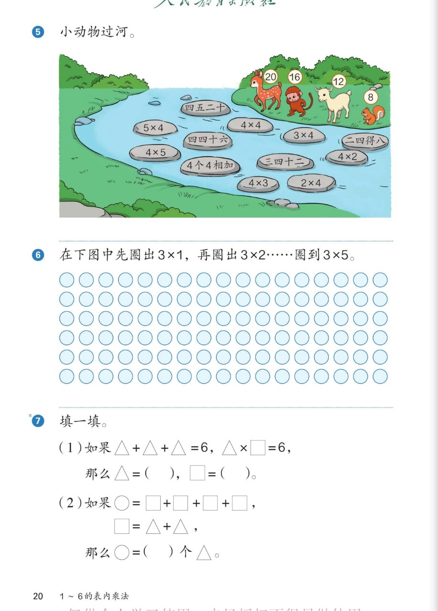

🦌 1~6的表内乘法 · 课本第 20 页 · 练一练 5~7
人教版《数学》二年级上册 · 有声图文带读 · 先想后看解析
题数
6
认知
2
强化
3
拓展
1
本页重点
口诀配对 + 圈点子 + 符号推理
🎧 分两步学：
① 解析教材图片
——纯声音读图，读到哪一块哪一块闪动提示；关键处先倒计时让你思考，再在图片下方给出解析并朗读。
② 分层提问练习
——六道分层题（认知 / 强化 / 拓展），先思考再展开解析、朗读参考答案；这一步不再回到图片。
也可以随时点任意一句话、图上任意一块单独听；点课本文字卡还会展开答案。
教材图片（点块听读，读到哪块哪块闪）

📖 人教版《数学》二年级上册 · 课本第 20 页 · 图片仅供个人学习，版权归人民教育出版社所有
🤔 想一想（点我可跳过）
课本的文字（点句子：听读 + 看答案）
第 5 题
小动物过河：小鹿 20 · 小猴 16 · 小羊 12 · 小松鼠 8
看答案 ▾
任务：
动物身上的数，要和石头上的
口诀或算式
对上，才踩得过去。
石头有：四五二十、5×4、四四十六、4×4、4×5、4 个 4 相加、三四十二、3×4、二四得八、4×2、4×3、2×4
第 5 题
过河配对全解
看答案 ▾
小鹿 20：
四五二十 · 5×4 · 4×5
小猴 16：
四四十六 · 4×4 · 4 个 4 相加
小羊 12：
三四十二 · 3×4 · 4×3
小松鼠 8：
二四得八 · 4×2 · 2×4
第 6 题
先圈出 3×1，再圈出 3×2……圈到 3×5
看答案 ▾
圈法：
3×1 圈
3
个 → 3×2 圈
6
个 → 3×3 圈
9
个 → 3×4 圈
12
个 → 3×5 圈
15
个
💡 每次多圈 3 个——这就是 3 的口诀得数：3、6、9、12、15
第 7 题 (1)
△+△+△=6，△×□=6，△=？□=？
看答案 ▾
第一步：
3 个 △ 是 6 → △=
2
第二步：
2×□=6 → 想「二三得六」→ □=
3
第 7 题 (2)
○=□+□+□+□，□=△+△，○=（ ）个△
看答案 ▾
思路：
○ 是
4 个 □
；1 个 □ 是
2 个 △
结论：
○ 是
8 个 △
（4 个 2 相加：2+2+2+2=8）
🔑 核对口诀
过河要用的口诀核对
看答案 ▾
三四十二：
4×3=12，3×4=12
四四十六：
4×4=16
四五二十：
4×5=20，5×4=20
二四得八：
2×4=8，4×2=8
💡 思维种子
符号题的好办法：先把符号换成数
看答案 ▾
两步走：
①先用加法算出每个符号代表几；②把符号换成数，再想口诀。
△=2 → 「△×□=6」就变成「2×□=6」→ 二三得六 → □=3
分层提问练习（先想后看解析）
🦌
认知
小鹿 20 能踩哪几块石头过河？
看解析
🤔 想一想
解析：
四五二十
·
5×4
·
4×5
（都得 20）
💡 一句口诀 + 一对算式，都是「几个几」的变形
🐐
认知
小羊 12 和小松鼠 8 各踩哪几块石头？
看解析
🤔 想一想
解析：
小羊 12：
三四十二 · 3×4 · 4×3
小松鼠 8：
二四得八 · 4×2 · 2×4
🔺
强化
△+△+△=6，△×□=6：△ 和 □ 各是几？
看解析
🤔 想一想
解析：
求 △：
3 个 △ 是 6 → △=
2
求 □：
2×□=6 → 二三得六 → □=
3
💡 先用加法定符号，再用口诀解算式
⭕
强化
○=□+□+□+□，□=△+△：○ 是几个 △？
看解析
🤔 想一想
解析：
○
是 4 个 □；1 个 □ 是 2 个 △
换一换：
○ 是
8 个 △
（4 个 2 相加）
💡 一层一层换：□ 换成 2 个 △，○ 就有 4 份 2 个 △
🧮
强化
从 3×1 圈到 3×5，一共圈了多少个点？
看解析
🤔 想一想
解析：
每次圈：
3、6、9、12、15 个
合计：
3+6+9+12+15=
45
（个）
💡 把 5 次圈的数量连加，就是全部圈过的点
🚀
拓展
又来一只小鸟写着 10，它有石头可踩吗？说说想法。
看解析
🤔 想一想
解析（开放题）：
看一看：
河里的石头都是 4 相关的口诀，得数是 4、8、12、16、20——
没有 10
发现：
口诀的得数不是所有数都有；10 只能由 2×5 或 5×2 得到，河里没有它们的石头。
🌈 判断「有还是没有」并说出理由，就是好答案
① 解析教材图片
② 分层提问练习
⏹ 停止
纯声音 + 高亮跟随 · 想好才出解析
← 返回导航